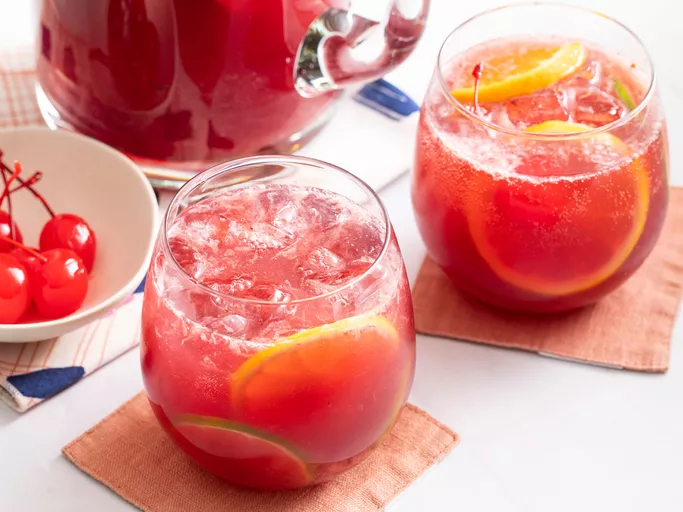

Sangria

Description:
This sangria recipe is the obvious choice when you need a crowd-pleasing cocktail. A pitcher of refreshing sangria is the perfect summer drink to sip on at your backyard barbecue or party. So, let us introduce you to the best sangria recipe we have. It's easy to make and, even better, it's irresistibly delicious.
Ingredients:
- 1 (750 milliliter) bottle dry red wine
- ½ cup brandy
- ½ cup triple sec
- ⅓ cup frozen lemonade concentrate
- ⅓ cup orange juice
- ¼ cup lemon juice
- ¼ cup white sugar (Optional)
- 1 medium orange, sliced into rounds
- 1 medium lemon, sliced into rounds
- 1 medium lime, sliced into rounds
- 8 maraschino cherries
- 2 cups carbonated water (Optional)
Steps:
- Gather all ingredients.
- Mix red wine, brandy, triple sec, lemonade concentrate, orange juice, lemon juice, and sugar together in a bowl. Add orange, lemon and lime slices, and maraschino cherries.
- Serve immediately over ice, or refrigerate 8 hours to overnight for best flavor. For a fizzy sangria, add club soda just before serving.